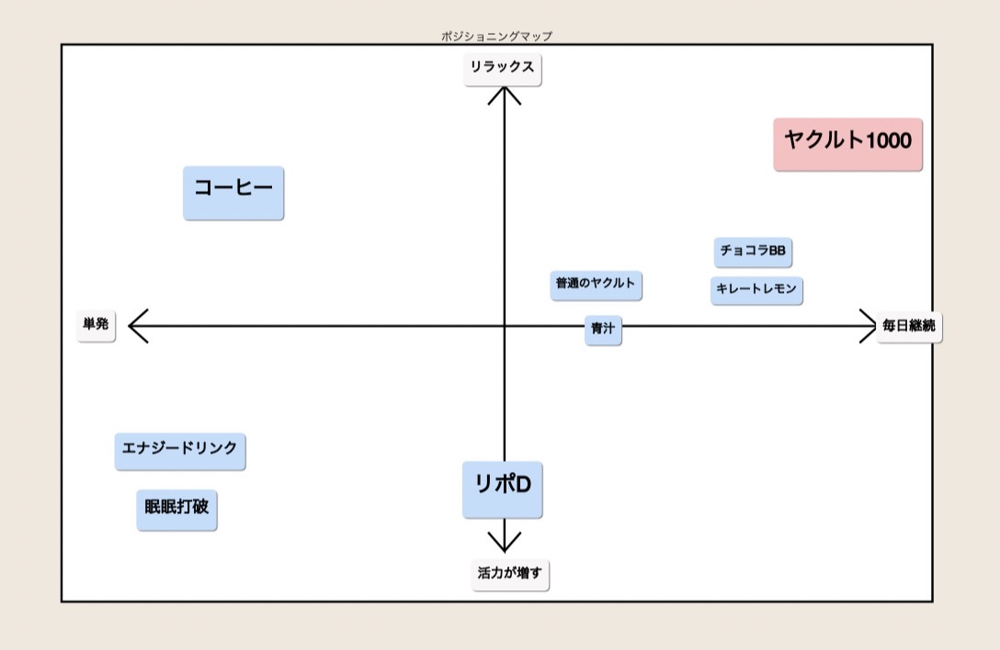
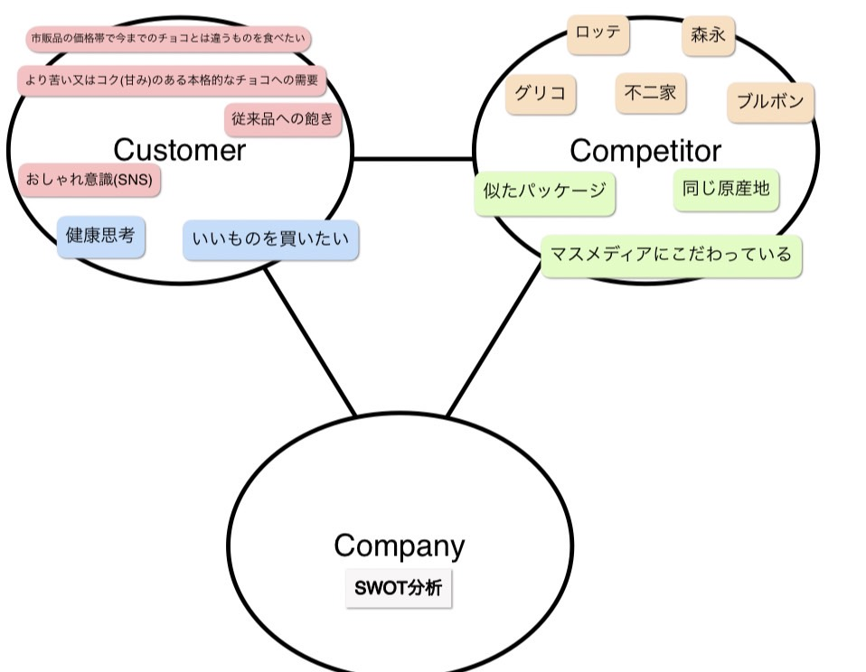
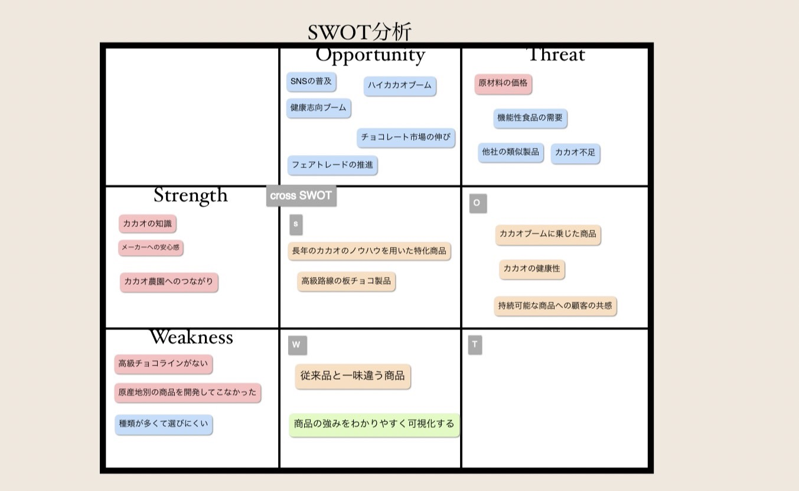

- ヤクルト1000は毎日飲んでもらうことを想定している
- 活力を与える飲料や従来の乳酸菌飲料（ヤクルト）と異なりストレス解消に特化
- 事例 明治のザ・チョコレート （高価格帯チョコでヒット）:
風味の系統を複数に分け、それぞれに合致する商品をそれぞれ開発し１つのシリーズとして発売
一回2014年に販売している（２種類）：大規模なCMで産地や製法をアピールするも売上伸び悩む
→2015にリニューアル
- カカオの香味を楽しむ4種類(産地やカカオの比率が異なる）(甘めとビター＋フルーティorナッツ)
- レーターチャートで風味がわかるように
- 製品は４つの形状の形状を用意
- 種類ごとのおしゃれなクラフトパッケージ
- プロモーション：ワークショップ形式の価格会議、開発チームが営業と流通の商談で説明
- 明治:1920sからチョコを発売
- チョコレート市場の規模は5000億円(2018）→そのうち明治はシェア１位（24%)
ただしミルクチョコレートに関して他社ブランドとの価格競争に直面＝利益率が悪くなる
＋各メーカーは同じ原産地のカカオを使いがち＝違いが生まれにくい
→カカオにこだわった高品質チョコレートへ…
- 現地に向かいカカオ（原材料）の品質を生産者を支援しつつ、共ににコントロールする必要がある
↓
カカオ（アフリカ、東南アジア)生産国でカカオを乾燥させ、日本で焙煎し加工
（カカオの産地や発酵日数で味わいが異なるため
- 明治カカオサポートプロジェクト（フェアトレード）
原産国の農家の環境は厳しい→生産を持続可能なものにする必要＝技術支援、人材支援…
- 好機：チョコレートの健康効果の普及
職人的なチョコレート専門店(bean to bar:豆から生産販売まで一貫して)の増加


- 開発＝技術と市場とバランス
- マーケティング近視眼を避ける
→過剰な顧客志向を避けることができる（なんでも酷悪のことを聞くといいわけではない）
→技術変化にも対応できる
→本当に顧客のニーズに対応するものを作れる
例）1/4のインチのドリル＝ドリルは「DIYをするために」「穴を開ける」という目的＝一歩下がって目的を理解している必要
- 目的を見れば、戦うべき市場がわかる
- 輸送 →鉄道、自動車
- エネルギー供給 →石油精製
- エンタメ →映画、ゲーム
- 情報の記録 →写真フィルム、USB
- クリーニング →潜在、洗濯機
- ソリューション →パソコン
- 何でもかんでも消費者の表面的なニーズを汲むデメリット：
＝製品バリエーションが増えすぎて在庫が増える
＝引き算の概念も大事（使用の削減、コスト削減）
- 顧客思考の徹底、ユニークな価値提供
- マーケティング＝売れる仕組みをどうするか
- STP→4P→実行→フィードバック:
- ターゲットを明確にする＝ターゲットカスタマー商品を通じて喜んでもらえる顧客
-
S：消費者の分類
近年は心理的変数や生活行動的変数への注目
- T：どの顧客層を狙うか（立ち位置を明確にする）→ペルソナ
誰に、何を、どのように、どういう立ち位置で
- P：自社の製品をどう差別化する？
ポジショニングマップ
- マインドセット
バリュー
↓
最低限の必要事項を洗い出す＋機能面、感情面のニーズ
ポジショニングステートメントでUnique Selling Points、ターゲットカスタマー、ポジショニングを明確にする
前のページに戻る